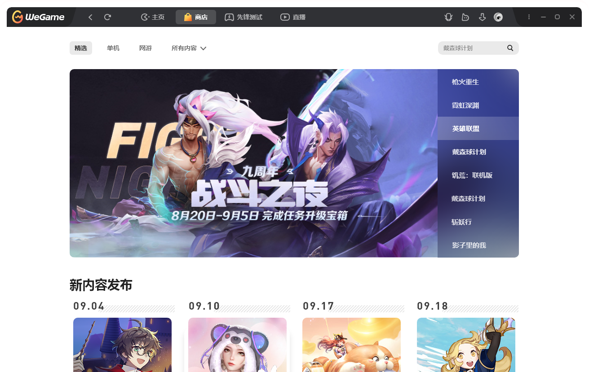

<!--
https://mp.weixin.qq.com/s/zySQxU5c2IP_RVXX4CojXA
-->
<div class="g-scroll" id="g-scroll"></div>
<div class="bg"></div>
<div class="g-wrap">
  <div class="mask">
    
  </div>
  <div class="logo">
  </div>
</div>

<style>
  html,
  body {
    width: 100%;
    height: 100%;
    overflow: hidden;
  }

  .g-scroll {
    width: 100vw;
    height: 500vh;
    position: absolute;
    top: 0;
    left: 0;
    z-index: 99;
  }

  .bg {
    position: absolute;
    top: 0;
    left: 0;
    width: 100vw;
    height: 100vh;
  }

  .bg img {
    width: 80%;
  }


  .g-wrap {
    position: fixed;
    top: 0;
    left: 0;
    width: 100vw;
    height: 100vh;
    overflow: hidden;
    background: linear-gradient(-75deg, #715633, #2b2522);
  }

  .mask {
    width: 100vw;
    height: 100vh;
    position: relative;
    transition: .5s;
    -webkit-mask-image: url(./sc01-logo.52fe03c4.svg);
    -webkit-mask-repeat: no-repeat;
    -webkit-mask-size: 20% auto;
    -webkit-mask-position: 50% 50%;
  }

  .mask img {
    width: 100%;
  }

  .logo {
    width: 100%;
    height: 100%;
    transition: .5s;
    position: absolute;
    top: 0;
    left: 0;
    display: flex;
    align-items: center;
    justify-content: center;
    background-image: url(./sc01-logo.52fe03c4.svg);
    background-repeat: no-repeat;
    background-size: 20%;
    background-position: center;
  }


  /*
  @scroll-timeline box-move {
    source: selector("#g-scroll");
    orientation: "vertical";
  }

  @keyframes reOpacityChange {

    0%,
    50% {
      opacity: 1;
    }

    90% {
      opacity: .2;
    }

    100% {
      opacity: 0;
    }
  }

  @keyframes scale {
    0% {
      transform: scale(1);
    }

    40% {
      transform: scale(5);
    }

    70% {
      transform: scale(20)
    }

    100% {
      transform: scale(60);
    }
  } */
</style>

<script>
  /*
  logo 在第一层 —— 最前面
  mask 在第二层
  weGame 在第三层

  基本思路就是, 滚动的时候,
  logo 边放大边消失,
  mask 渐渐显示,
  weGame 渐渐放大
  */
  const mask = document.querySelector('.mask')
  const wrap = document.querySelector('.g-wrap')
  const logo = document.querySelector('.logo')

  const g = document.getElementById('g-scroll')

  let logoOpacity = 0.35
  let logoSize = 220
  let weGameSize = 220
  let weGameOpacity = 0.7
  // setTimeout(() => {
  //   logo.style.opacity = 0.9
  //   logo.style.transform = `scale(4)`
  // }, 100);
  g.onwheel = () => {
    mask.style.webkitMaskSize = '200%'
    logo.style.backgroundSize = '200%'
    logo.style.opacity = '0.4'
    let i = 1
    g.onwheel = () => {
      mask.style.webkitMaskSize = weGameSize + '%'
      wrap.style.opacity = weGameOpacity
      logo.style.backgroundSize = logoSize + '%'
      logo.style.opacity = logoOpacity
      weGameSize += 20 * i
      logoSize += 20 * i
      logoOpacity -= 0.05
      weGameOpacity -= 0.1
      i += i
    }
  }


</script>